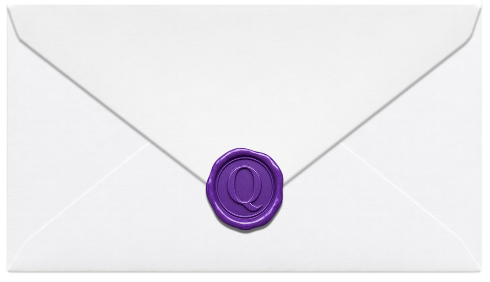

OPEN ME

My dear Babie
Today marks our very first anniversary which is a bit funny because it was a miscalculation at first when we were deciding on what date are we going to be official together, but who would have thought that tiny error would be a step for the both of us to be happy with each other, and celebrate this precious day.
My love, I cherish my days and all the days that is to come with you. You have made me more happy than I ever was. As we celebrate this moment I want to say I love you once again and ever more to the love of my life, my gorgeous and cute babie, the one that made me rethink that it's just perfect not winning in the lottery as long as I've won the woman of my life. Thank you for being a part of my life me and I am hopeful that we strive to be better for us to have the life that we desire.
We may have hard moments sometimes, but I believe all of those will make us stronger for each other. No words can capture how I am mesmerized of you Qessy. May we have each other in times of both joy and sadness, my dear Ms. Matcha.
Love, Mr. Fossil